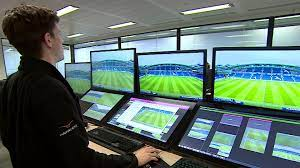
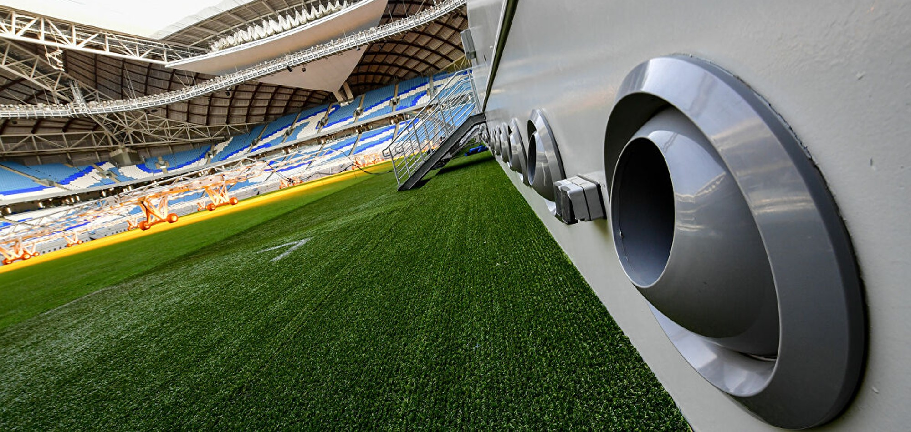

Technology is used in soccer with VAR. The VAR system is a tool to help the referees. It was first introduced in 2017 in Major League Soccer. VAR is used during goals, penalty decisions, and plays leading up to a red card. A red card is given to the player by the referee. When there is a hard foul play, the VAR comes in and watches the replay that leads to the foul. Without VAR, the game would be different. It makes the game too good, and sometimes gives the teams a disadvantage in games. The VAR team communicates with the referee only for mistakes or missed incidents. A referee may give a player a red card and then get sent out. They would watch the replay with VAR help and if it wasn’t a red car they would give them a yellow one instead.
The Offside technology tells the match officials team that it was offside. The semi-automated offside technology is going to be used in the 2022 World Cup in Qatar on November 21. The offside technology will be different compared to the other years before. It will show a 3D view off the offside with different camera angles. The people will see a 3D person and explain how it was offside. An offside call is when the opponent player is ahead of the player when the ball is passed to them. That when the offside foul is called and it is reviewed by the VAR. There are 12 tracking cameras mounted on the roof of the stadium to track the ball. They are up to 29 data points of each individual player.

Technology has helped cooling systems in the stadiums. Having a cooling system in the stadium where it is hot in the country is important. Players could pass out because of the temperature in the field. So to make sure players don’t pass out they will need to install an air cooling system in each stadium. Each cooling system is made to fit in the stadium. Each of the stadium cooling systems has unusual designs and features. They are cleaning the air when they are using it.
